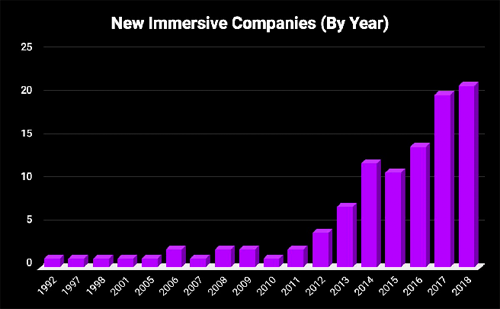
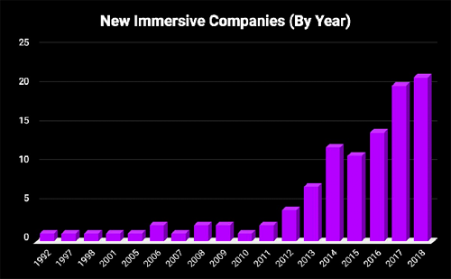

BENEFITS
OUR GOAL IS TO INCREASE THE PROFIT OF HOTELS BY THE MEANS OF FREE ADVERTISING. HOW? YOUR GUESTS WILL BE YOUR LOUD-HAILER TELLING ABOUT THE IMMERSIVE SHOWS TO EVERYBODY THEY KNOW!
- I guarantee that guests will remember this day and will want to return to your hotel to experience the same emotions again!
- What will happen will be so unusual that people will need to talk it out — they will spread the rumor about your hotel to all their friends and in social networks!
- Professionally prepared Facebook/Instagram channels, a specially designed,branded augmented reality filter (AR-filter) for Facebook/Instagram stories, vivid images of heroes, ready-made stories for viral memes, a funny final video — everything will be prepared so that guests can scratch their hands quickly to share events happening.
- You will receive a explosion of references to your hotel on social networks For free. Guaranteed
What makes our life vibrant and memorable?
Emotions!
When do people share their experience? When emotions DO overwhelm them!
What is the key factor when choosing a hotel? Recommendations of friends and reviews on sites.